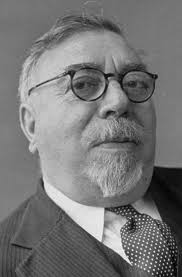
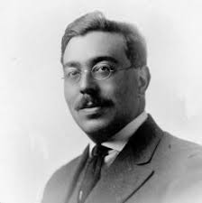
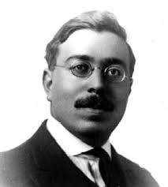
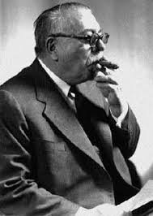

Norbert Weiner
Child Prodigy, Mathematician, Philosopher.
BE MORE NORBERT.

FACT
Norbert Wiener invented the field of cybernetics, inspiring a generation of scientists to think of computer technology as a means to extend human capabilities.

FACT
Harvard awarded Wiener a Ph.D. in 1912, when he was merely 17 years old, for a dissertation on mathematical logic.

FACT
Although Wiener eventually became a staunch pacifist, he eagerly contributed to the war effort in World War I. In 1916, with America's entry into the war drawing closer, Wiener attended a training camp for potential military officers, but failed to earn a commission.

FACT
His fame helped MIT to recruit a research team in cognitive science, composed of researchers in neuropsychology and the mathematics and biophysics of the nervous system, including Warren Sturgis McCulloch and Walter Pitts. These men later made pioneering contributions to computer science and artificial intelligence.
